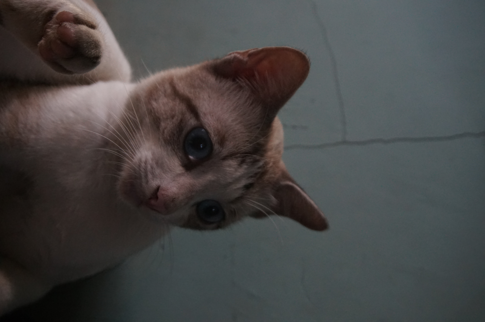

THE CINEMATIC GALLERY
Capturing moments, telling stories.
keyboard_double_arrow_down
Capturing moments, telling stories.





I believe photography is less about looking and more about feeling. It is the art of capturing the atmosphere between the subject and the lens.
With over a decade spent traveling through quiet landscapes and vibrant cityscapes, my work aims to reveal the cinematic quality found in everyday existence—the moments that usually go unnoticed in the rush of the modern world.